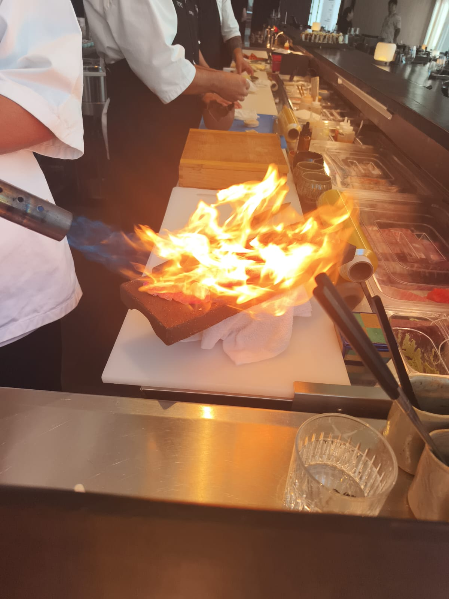

W Santiago · Las Condes · Chef Enzo Catalán
天狗 · El Guardián de las Montañas
La leyenda
El Tengu es una criatura legendaria del folclore japonés — guardián de las montañas, protector del bosque, símbolo de fuerza, sabiduría y equilibrio espiritual.
Cada plato nace de esta filosofía: la precisión del maestro y la fuerza de la naturaleza, unidos en una ceremonia que honra la tradición japonesa pura.
El ritual del sake
La selección de sake más completa de Chile. Cada variedad cuenta una historia: el terroir del arroz, el agua de montaña, la habilidad del Toji — el maestro cervecero.
Nuestro sommelier guiará tu experiencia hacia el maridaje perfecto con cada plato.
Reservas
Isidora Goyenechea 3000, local 104 · W Santiago · Las Condes
Mar–Sáb 13:00–15:30 · 19:00–23:00 | Dom 13:00–16:00 | Lun cerrado
+56 X XXXX XXXX
W Santiago · Local 104
El Oráculo del Tengu
Pregúntame sobre la carta, el sake, los yokai o haz tu reserva.